Blogitekstit · Kesäkuu 2020
Elämänpistejahdissa - vinkit miekkasärjen ja valkoevätörön ongintaan

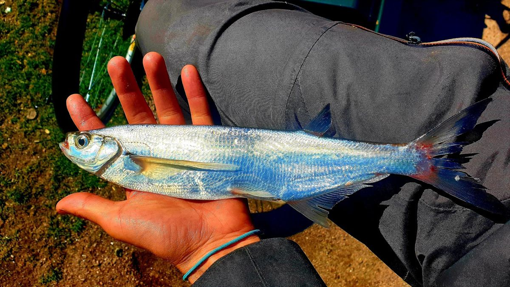
Hyvä ystäväni ja tiimikaverini Timi Laitinen on myös nykyisen lajikalastuksen ennätyksen hallitsija. Huimat 52 eri kalalajia suusta koukutettuna kalenterivuoden aikana on saavutus, jota pidettiin pitkään rikkomattomana.
Timin tekemästä ennätyksestä voi lukea tästä Iltasanomien jutusta:
Timi Tuusulasta narrasi ennätyksellisen määrän kalalajeja Suomen vesistä – ikimuistoisimmalla reissulla peukalo esti veneen uppoamisen
Kuluva vuosi, särmäneulan ja seitsenruototokon koukutukset ja kärkiporukan kova toistensa kirittäminen tulee hyvin suurella todennäköisyydellä sysäämään nykyisen ennätyksen takavasemmalle.
Se mihin lukemaan uusi ennätys kirjoitetaan, selviää 31.12.2020.

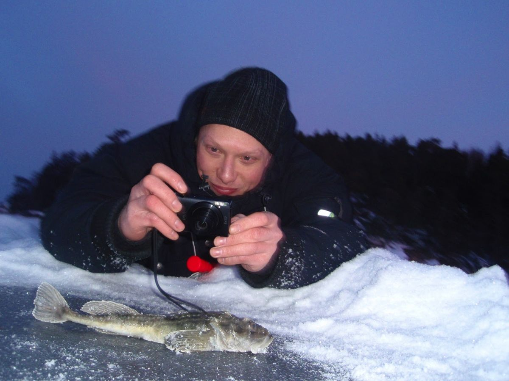
Minun ja Timin ystävyys alkoi Facebook-viestittelyllä ja yhteisillä kalareissuilla härkäsimppujahtiin Airistolle. Tuolta reissulta muistoina elää elämänpisteen saamisen tunne ja ne upeat yhdessä koetut hetket. Ensimmäinen yhteinen retkemme sanoin löytyy tästä.
”Timin toinen reikä menossa, pilkkiä kävi joku tökkäämässä. Tärppi, vastaisku ja armoton siiman keriminen alkaa... jatkuu, jatkuu, jatkuu... Se on siinä, se on siinä kuten Mertaranta aikoinaan huuteli eetteriin. Timin uusi elämänpiste näki auringonnousun klo 8.04.”
Näiden hetkien jälkeen olemme kokeneet yhdessä Kalamaratonit ja sadat muut kalareissut.
Jälleen oli edessä yksi kalareissu, Saimaan kanava kutsui.
Timin ideasta lähdimme matkaan jo lauantai iltana, näin pystyisimme keskittymään yön ajaksi valkoevätörön kalastamiseen ja sunnuntaina heti aamusta siirtyisimme miekkasärkijahtiin.
Seurueeseemme liittyi mukaan lauantai-iltana myös Miika.
Matkalla Lappeenrantaan kävimme moikkaamassa Vloggari Defeä ja kokeilimme pikapistona toutainta muutamasta kohdasta Kuusankoskella.
Olli-Pekka sen keksi – näin nappaat valkoevätörön

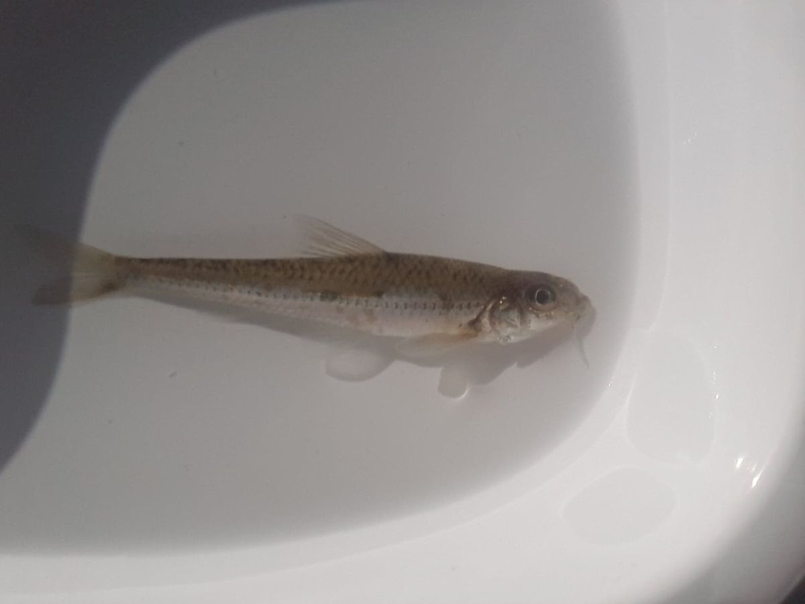
Valkoevätörö (Romanogobio albipinnatus) on uusin vieraslajitulokkaamme. Kanavassa hitaasti kasvava kalakanta on ollut monelle fongarille haastava pyydettävä. Tarmo ja Liisa Muuri onnistuivat ensimmäisenä, Mikael Jaakkola nappasi litkalla elämänpisteensä ja Juuso ja Timi ongella.
Lajin pyynti oli pitkään hakuammuntaa Soskuan sulun betonimuurilta. Tarmon vinkit valkoevätörö jahtiin löydät hänen nettisivuiltaan, lue vinkit tästä.

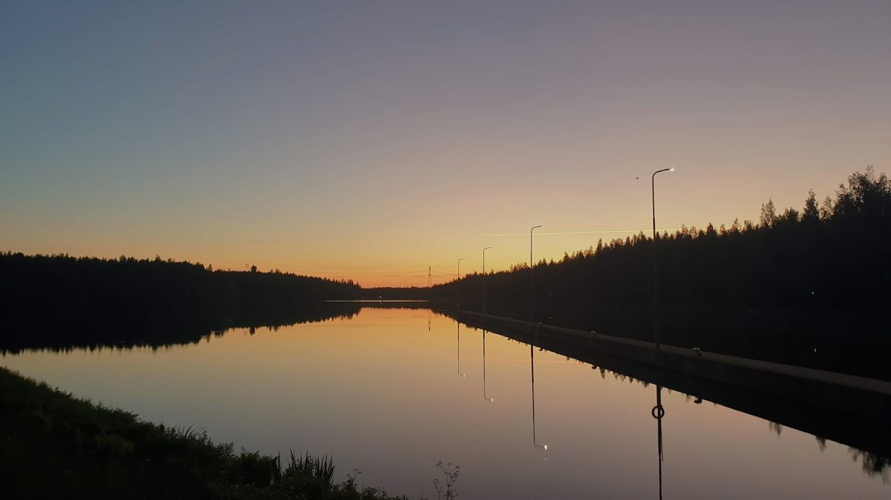
Hakuammuntaa siihen asti, kunnes Olli-Pekka Turunen sen keksi. Valkoevätöröjä pystyisi kalastaa näkökalastamalla, ilman että tarvitsee onkia sokkona.
”Valkoevätörön voi lirkkiä ja näkökalastaa. Kalat tulevat laivojen ohi seilatessa muurin juureen pyörimään ja niitä voi yrittää jallittaa näkökalastaen. Valoarkoja. selkeästi yöaktiivisia, päivisin ei kaloista näkynyt jälkeäkään. Suurin haaste siis mm. se, että kuinka koukkuun saa tarttumaan juurikin törön eikä muita lajeja.” - Olli-Pekka
Tarkennetaan meidän retkiryhmän kokemuksilla Olli-Pekan havaintoa. Töröt kyllä uivat muurin vierustaa ja lähes muurissa kiinni. Uinti muuria vasten ei vaadi ohi seilaavaa laivaa tai sen aiheuttamaa virtauksen muutosta.
Saavuimme Soskuen sululle hieman ennen puolta yötä, minä, Miika ja Timi. Timillä elämänpiste lajista jo olikin eikä häntä lajipisteet tänä vuona kiinnosta.

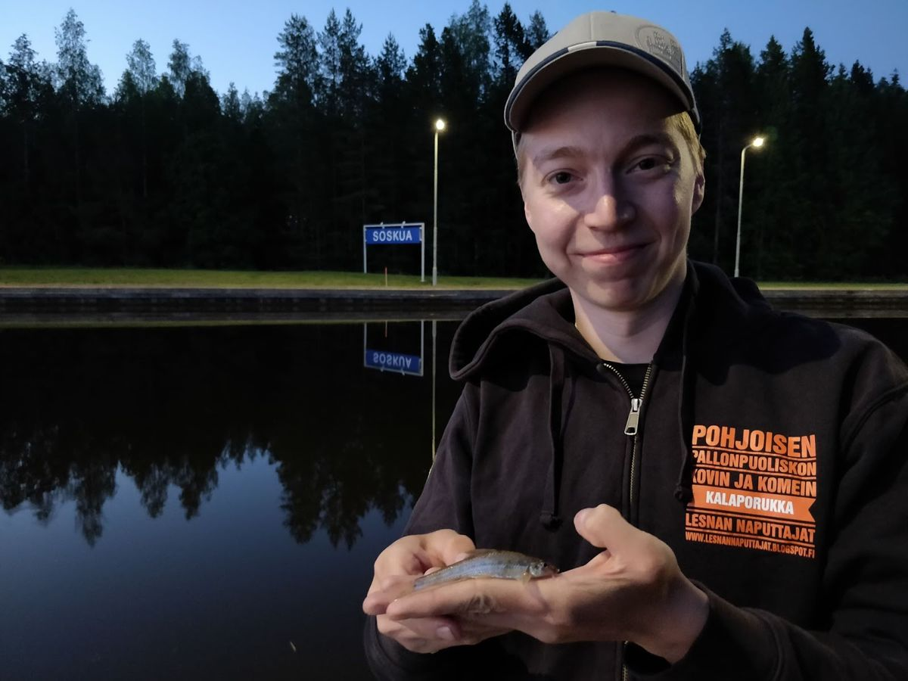
Miikalla ei montaa minuuttia lajin saamiseen mennyt. Pitkällä lirkillä vedenalta kajastavan kiven kolosta se nappasi, Miikan elämänpiste nro. 52. Valkoevätöröjä näkyi jatkuvasti muuria vasten, ne uivat pinnan tuntumassa syöden jotain välillä muurin pinnalta.

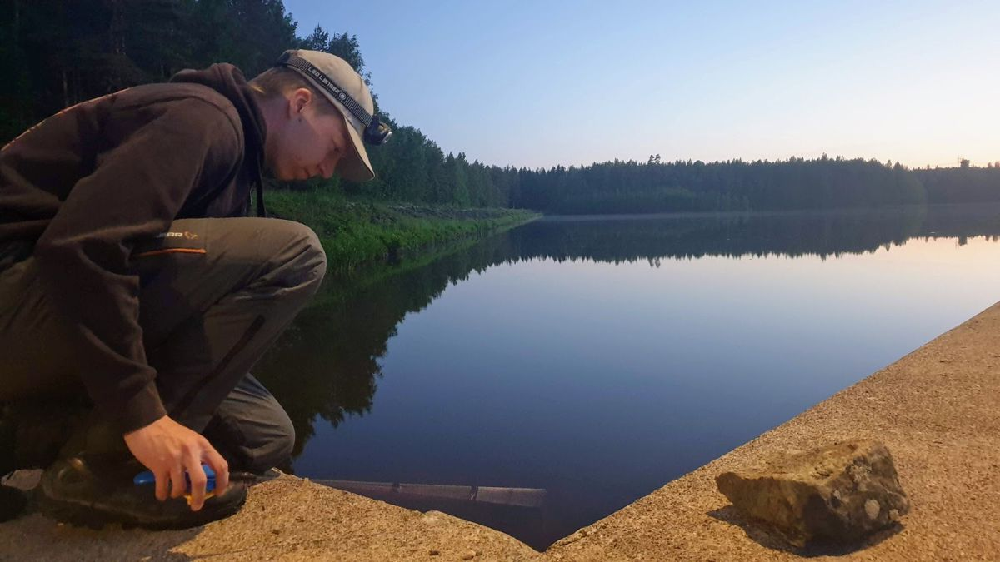
Tiputin Ownerin small hook koukullisella lirkillä puolikkaan kärpäsentoukan uivien kalojen eteen saaden ne kiinnostumaan. Lopulta noin tunnin yrittämisen jälkeen oma elämänpsiteeni nro. 58 oli nähnyt yöllisen Soskuan valot.

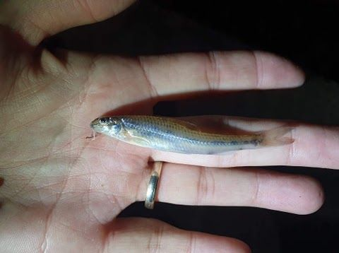
Yrtin nukkua riippumatossa, onnistuin siitä tippumaan ja nauruni herätti myös telttaansa kömpineen Miikan. Timi oli majoittunut patjalle kanavan rannalle.

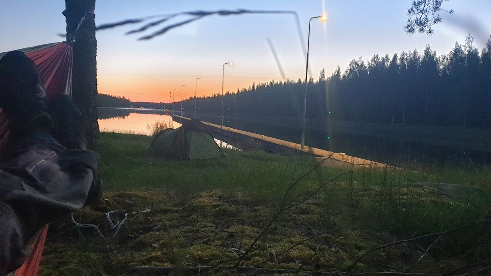
Päätin tutustua töröjen elämään ja loppuyön ajan kalastin niitä, tai yritin. Jälkimmäiseksi se jäi, sain vain yhden kontaktin kun ilmasta törö tippui takaisin veteen. Oliko juuri yön pimein hetki se jolloin töröt olivat aktiivisimpia? Tuolloin oli myös ainoa kerta kun näimme "ison" parven. Tuossa parvessa oli noin 30 töröä.
Vinkit miekkasärkijahtiin - sitkeys palkitaan!

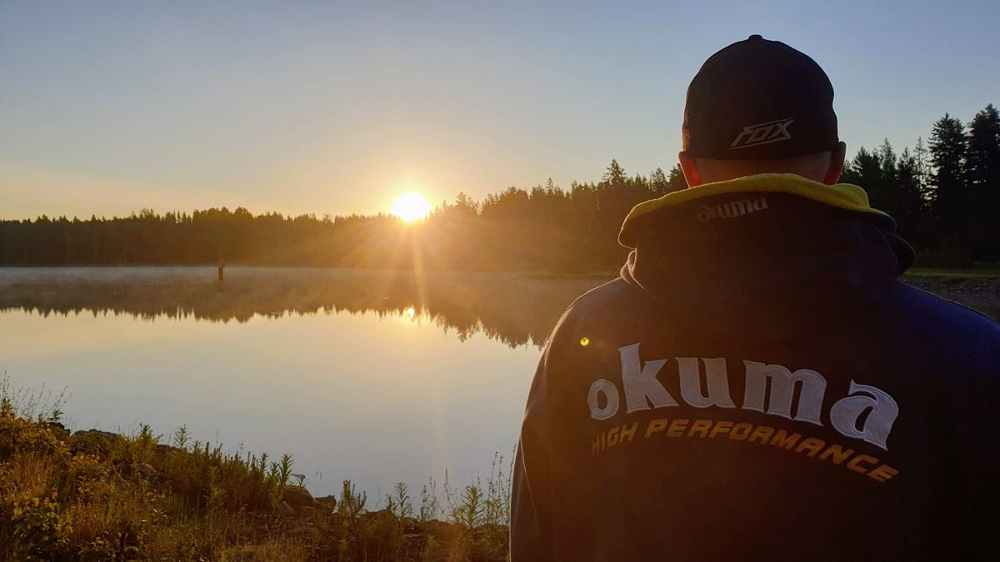
Ei ole tyhmää kysyä vinkkejä kokeneemmilta kalastajilta, näin oppii uutta ja tavoitettavan saaliin pyyntimahdollisuudet nousevat. Lappeenrannassa miekkasärjen (Pelecus cultratus) onginnan taitaa Kimmo Hyvärinen, hänen vinkkejänsä kannattaa hyödyntää.
”Aika on nyt otollisin mahdollinen.
Seitsemän metrin vavalla onkien, pohjalle särkimäskiä kylväen onnistunee.
Onkilaite olisi oltava sellainen, että syötti menee melko hitaasti leijaillen kohti pohjaa heiton jälkeen. Usein miekka nappaa sieltä jostakin väliltä.
Mutta väliveteen säädetyllä ongella asia tuskin onnistuu, eli ongen luotaus pohjan tuntumaan kuitenkin.
Valkea kärpästoukka, siis nippu niitä, on paras syötti.” – Kimmo
Karvaita pettymyksiä elämänpisteen näkemisestä ja menettämisestä koettiin Kalamaratonissa vuonna 2016.
Tuolloin jo alusta alkaen vihkoon mennyt kilpailu sai antikliimaksinsa, kun Pornaisten muurilla sunnuntai aamuna onkeen tarrasi miekkasärki. Tuo laji olisi silloin antanut varmasti uutta pontta kilpailuun, mutta kun kohtalo osuu kohdalle, käy seuraavasti.
KALA! Nyt tarvii haavin!
Haavi löytyikin, vieressä ollut Haperot Haspelit joukkueen toimesta. Suuri havaksinen venehaavi koukkasi kalan, joka paljastui miekkasärjeksi. Kaikki seurasi katseellaan kuinka kala nousi kuin hidastetussa filmissä kohti käsiäni, lopulta noin muurin reunan tasalla kala pomppasi.
Pomppasi juuri niin kuin parhaimmat uimahyppääjät ponnahduslaudalta, kaksi kierrettä vastapäivään pyörien.
Kala oli päättänyt; Ime fongari lettua, mä lähden kiitää.
Tähän näkyyn päättyi hetki jolloin luulin elämänpisteen nousevan listalle. Kala sujahti venehaavin havaksen läpi kadoten kohti suvannon pohjaa. Lähellä, mutta niin kaukana.
Muut miekkasärjen kalastusyritykset olivat olleet pieniä muutaman tunnin yrityksiä lomalta paluu- tai menomatkalla tehtyjä pikapistoja.
Nyt oli koko päivä aikaa, ei kiirettä ei aikataulua.
Aamu alkoi täysin tuulettomana. Aurinko oli jo ylhäällä kun neljältä kömmimme Suikinmyllyn alueelle ongelle. Koho ei liikkunut, kanava ei virrannut eikä tuuli sitä kuljettanut. Lopulta mäskien vaikutuksen ansiosta alkoi kaloja nousemaan. Miika nosti oikealla puolellani särkiä (Rutilus rutilus), minä taas pasureita (Blicca bjoerkna) ja salakoita (Alburnus alburnus).

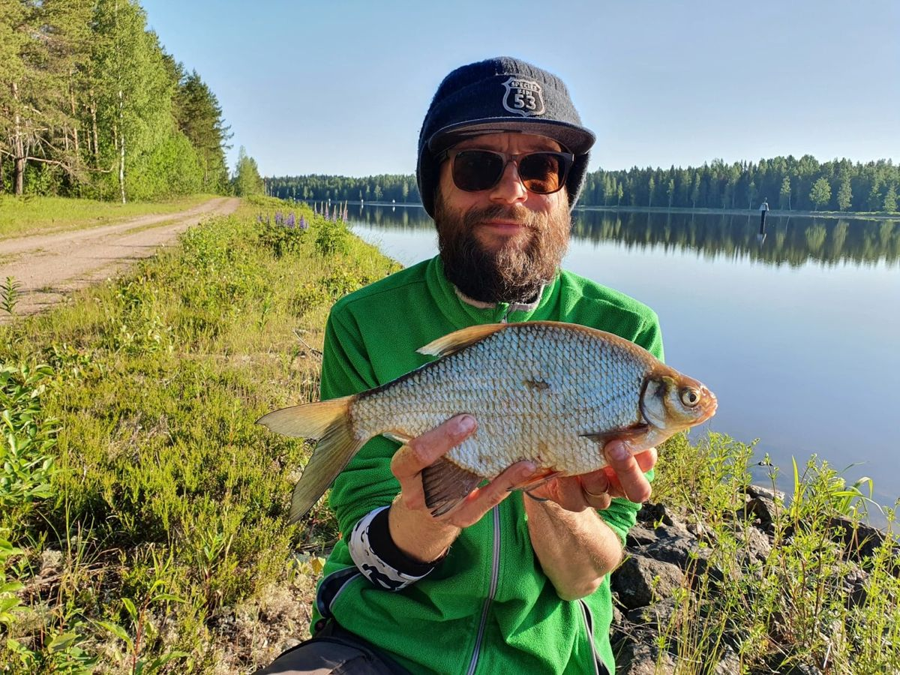
Pari pasuri aiheutti hieman hilpeyttä, ensimmäinen reilusti yli suurkalarajan ja toinen vielä enemmän. Oma pasuriennätykseni kirjataan nyt lukemiin 713 g. Upea, todella hieno kala antaitsi vapautensa.
Tyyni keli sai hyönteiset lentämään pinnan tuntumassa ja välillä näimmekin upeita miekkasärkien hyppyjä. Kalojen näköhavainnot antoivat intoa jatkaa kalastamista samassa kohtaa.
Onginnan keskeytti Miikalla tärpännyt suuri kala. Pitkään se pysyi näkymättömissä ja epäilys oli; joko nyt?

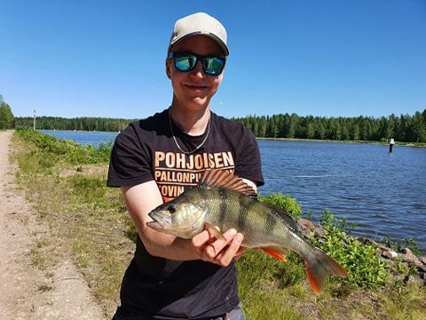
Haaviin päätyi lopulta Miikan PB ahven (Perca fluviatilis), vanha ennätys 650g jäi historiaan kun parannusta tuli +70g, uusi ennätys kirjataan nyt lukemaan 721g.
Lopulta hivenen yli puolen päivän Miikalla tärähti. Hetkä aikaisemmin hän oli virittänyt valmisonkilaitetta niin, että suuri heittopaino lukittui kohon ja koukun väliin noin puoleen väliin.
Tämä viritys sai syötin leijailemaan hitaammin kohti pohjaa, juuri kuten Kimmo oli ohjeistanut.

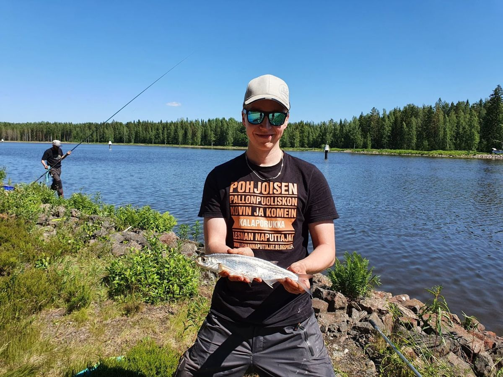
Kysyin fiiliksiä ja vastaus saajalta oli lyhyt ja ytimekäs.
"Loistava!" -Miika
Timi kannusti jatkamaan. Olin väsynyt, onkilaitteesta koukkutapsi katkennut. Vapa makasi maassa, minä istuin takapuskurilla. Onneksi tuuli, tuo pieni viilennystä tarjoava asia helpotti paahtavassa helteessä onkimista.
Timi kaivoi autosta loput mäskit, punaista, valkoista ja harmaata. Kaikki sekaisin, yhteensä noin viisi kiloa houkutusta kanavan kaloille. Plomps, plomps, plomps, kolme isoa mäskipalloa lensi kohoni viereen. Itse vaihdoin Miikalle lainaaman onkilaitteen onkeeni ja viritin painon uudestaan ylhäällä pysymään.
Seuraavat pari tuntia nostelin tasaisesti pasureita ja särkiä mäskipedin päältä. Viimein mäskipedin sivureunasta koho sukelsi ja kävi heti selville, että nyt oli suurempi ja voimakkaampi kala siiman päässä.
TIMI!
Nyt on kiinni tavoite laji. Hopea pitkänomainen kala vilahtaa, pidän ongessa siiman kireällä ja Timi saapuu rantaan haavin kanssa.
Lopulta näen kuinka tuo hopeiden kala sujahtaa haaviin: JESH!

Kanavan tuulisella pinnalla kaikui JESH!
huutoni jälkimainingin, oli epätodellinen fiilis. Olinko minä saanut juuri äsken miekkasärjen, onko se oikeasti haavissa ja mitä PIIPPIÄ.
Olin jo luovuttamassa, onko Ahti vetten haltina päättänyt, että siimat kiristyvät ja lajeja nousee, kun tarpeeksi yrittää?
Toivottavasti näillä vinkeillä kaikki fongarit onnistuvat näiden kahden Saimaan kanavan asukin jallittamisessa elämänpiste- ja vuosipistelistalleen.

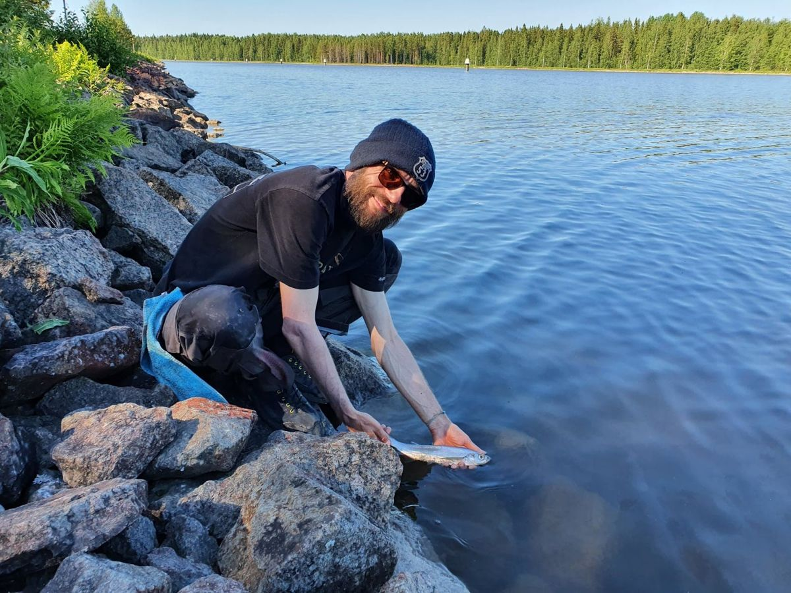
Me onnistuimme, nyt on teidän vuoro!
Kohti kotia - toutainyritys

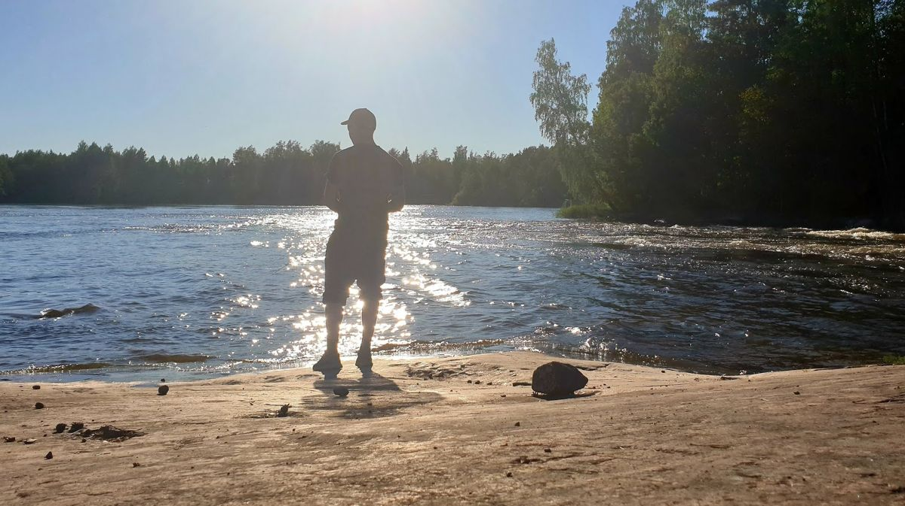
Timi ehdotti, että kokeilisimme Kymijoelta vielä toutainta. En pistänyt vastaan, olihan kello vasta viisi ja vajaan kahden tunnin ajomatkan päässä pelipaikat valmiina. Väsyneenä 12 tunnin onginnasta päädyimme ratkaisuun, jossa menisimme Hirvivuolteen padolle.
Padon alapuolella on kalliotasanne, jolta voi laskea vaapun virran vietäväksi ja kelata sen jälkeen hiljalleen takaisin akanvirtaa pitkin. Näin Timi nappasi ennätysvuotensa toutaimen ja tämä olisi ”kevyt” tapa kalastaa loppuilta.
Utin ABC:ltä evästä mukaan ja kohti Kymijokea.
Paikalliset kalamiehet Arttu Mäkelä ja Milo Huoman olivat vallanneet parhaan paikan, kävin kysymässä saisimmeko liittyä heidän seuraan ja oliko saalista tullut.
”Tuli tuossa yksi kirre”, vastasi Milo.
Näytin Timille käsimerkin, että tähän jäädään.
Eroa edellisiin kertoihin oli, että molempien puolien patoluukut olivat auki. Virta oli jakautunut, eikä vain vasemmalle puolelle kuten ennen. Tämä vaikeutti vieheen saamista virran vietäväksi.
Kiipesin kuitenkin oikeanpuoleisen luukun penkalle ja laskin Rapalan vaapun virran vietäväksi. Kun vaappu oli tarpeeksi pitkälle valunut kiristin siiman. Pinkki siima nousi, kosken kuohuista ja vapa taipui välittömästi.
TIMI, kala!
Voisiko toutainpiste nousta näin nopeasti? Kelasin kalaa kovassa virrassa kohti Timin pitämää haavia, ja lopulta ensimmäinen näköhavainto paljasti totuuden; hauki (Esox lucius).

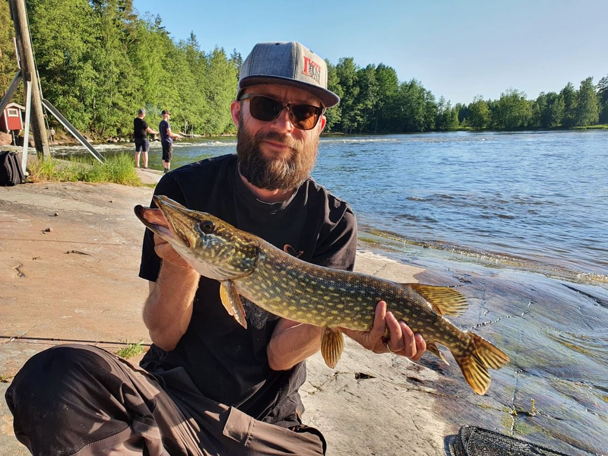
Kuva blogia varten ja kala takaisin harventamaan Kymijoen särkikalakantaa.
Kohti kotia, upea reissu päättyi siihen, kun tyttäreni tuli auttamaan kalakamojen kantamisessa sisälle.
Ystävät ja yhdessä koetut hetket - näitä lisää.
Seuraa ennätyksen etenemistä
Pidän kirjaa lajilistasta ja tarkemmasta retkidatasta Google -taulukossa, joka löytyy jokaisesta ennätysyrityksen postauksesta. Tästä linkistä taulukko avautuu uuteen ikkunaan.
Seurantatilanne löytyy myös blogini oikeasta yläreunasta.
Vuoden aikana ennätysyrityksessä kulkee mukaan myös tämä kalataitelija-graaffikko Sakke Yrjölän suunnittelema SPECIES FIN 53 -merkki.
Paitakulmassa painatin pipoon ja lippikseen saman merkin. Tavoitteeni on saada aikaiseksi 53 saaliskuvaa tekstin alussa tekemääni taulukkoon joissa kaikissa kuvissa näkyisi tuo kyseinen tunnus.
Paitakulma on Suomalainen perheyritys, joka haluaa panostaa laatuun ja asiakastyytyväisyyteen. Tutustu yrityksen palveluihin tästä.
2020 Hirvivuolle miekkasärki Olli-Pekka Turunen Timi Laitinen valkoevätörö